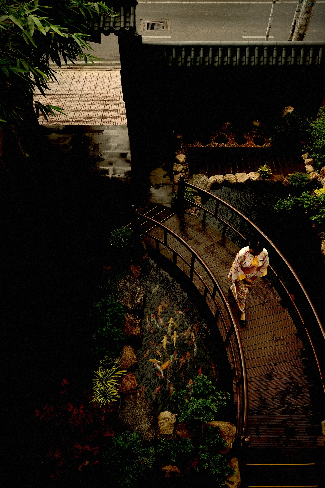
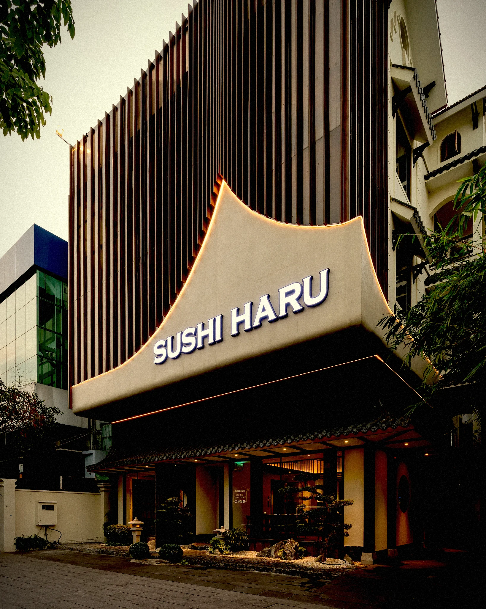
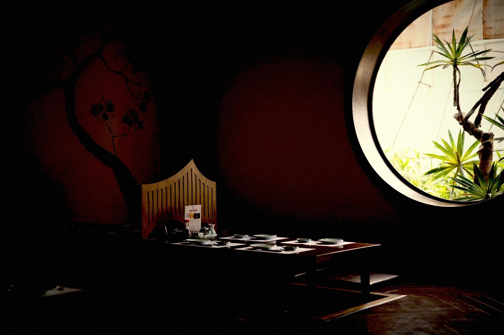
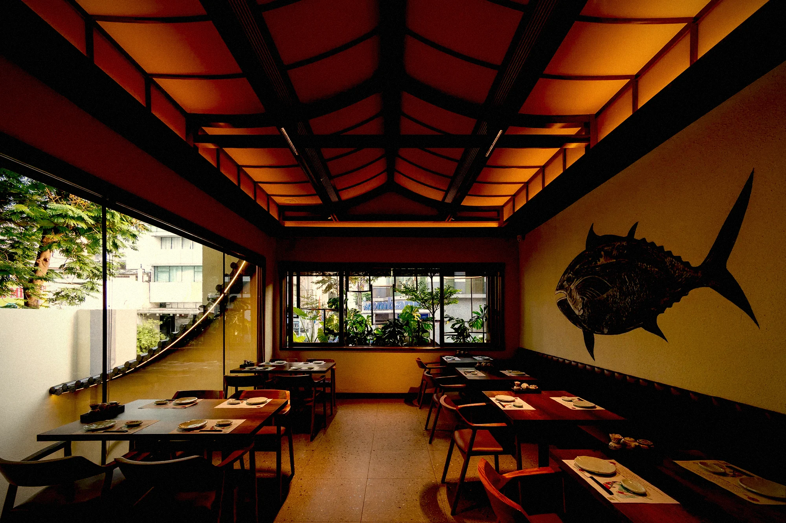

01 Sân vườn & hồ cá koi01
Sân vườn & hồ cá koi
Hồ koi, cầu đá và tiếng nước — một khoảng thở tĩnh giữa lòng phố.
Cửa nguyệt, sân thiền, hồ cá koi và những bức bích họa núi Phú Sĩ — trải nghiệm đích thực trên toàn hệ thống chi nhánh tại Sài Gòn.

01 Sân vườn & hồ cá koiHồ koi, cầu đá và tiếng nước — một khoảng thở tĩnh giữa lòng phố.

02 Mặt tiền chi nhánhKiến trúc mái dốc, ánh đèn ấm dẫn lối vào không gian Haru.

03 Phòng cửa nguyệtÔ cửa tròn kiểu Nhật, riêng tư và ấm cúng cho buổi gặp thân mật.
 04
Hiên trà đèn lồng
04
Hiên trà đèn lồng
Đèn lồng thắp về đêm, ấm cúng như một góc phố nhỏ Kyoto.
 05
Sảnh & bonsai
05
Sảnh & bonsai
Cầu thang gỗ, bonsai xanh — nghi thức đón khách theo tinh thần Nhật.

06 Phòng riêng ấm cúngTranh cá ngừ, ánh sáng dịu — dành cho những bữa tiệc riêng tư.